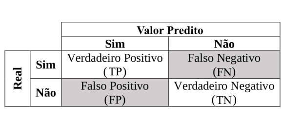

Aula 3
Aprendizado supervisionado: classificação
Introdução
Nesta aula, começaremos a estudar como resolver o grande problema que vimos na aula anterior: o de encontrar as melhores combinações de algoritmos, variáveis, parâmetros e amostras para fazer predições acuradas. Parte da solução para esse problema passará por aprendermos a definir formas de mensurar nosso desempenho em uma tarefa de predição.
Aprendizado supervisionado
Problemas de aprendizado supervisionado sempre partem de uma amostra na qual sabemos os valores de cada unidade \(i\) de \(Y_{i}\), os targets.1 Se o problema que queremos resolver é um de predição de votos – i.e., quantos votos uma candidatura obterá dado características pessoais da candidata –, de antemão precisamos ter uma amostra, baseada em dados de eleições anteriores, na qual sabemos a votação de diferentes candidaturas. O mesmo vale para um problema de predizer se uma candidatura foi (1) ou não (0) eleita.
1 Há textos que se referem à variável dependente (em aprendizado de máquina, podemos ter mais de uma, como veremos quando abordarmos redes neurais) como targets ou alvos. Isso só faz sentido, no entanto, quando falamos de aprendizado supervisionado.
Nesses e em outros casos, o interesse em geral é treinar um modelo, a partir de dados do passado, para fazer predições sobre ocorrências futuras – às vezes, o objetivo é um misto dos dois, como no caso do paper de Streeter (2019) recomendado para essa aula.
Métricas de validação
Mas como sabemos se temos ou não um bom modelo? O ITSL, no capítulo 2.2, oferece uma definição do que chamamos de quality of fit measures, isto é, métricas de qualidade de ajuste de um modelo. Diferentemente de aplicações de estatística inferencial, trata-se de métricas que usamos para avaliar se as predições de um modelo estão próximas ou não dos valores reais do nosso target na amostra utilizada.
Introdução à validação
Predição remete ao futuro. Quando treinamos um modelo, no mais das vezes queremos usá-lo pra falar do futuro, ou para especular sobre amostras que nas quais não temos targets – o que é chamado de unseen data. Por essa razão, calcular métricas de validação na amostra na qual um modelo foi treinado não é uma boa prática – isso abre espaço, inclusive, para que um modelo aprenda a modelar ruídos que só são encontrados nessa amostra particular. Em outras palavras, precisamos de dados ainda não usados pelo nosso modelo no treino para saber o quão bom é o seu desempenho preditivo.
Em Ciência de Dados, essa diferença entre bases usadas para treinar um modelo e bases usadas para validar um modelo resultou em uma classificação própria: dados ou amostras de treino e de teste. Para resumir:
Amostra de treinoé a amostra usada para treinar um modelo, \(\hat{f}\), em geral selecionada com um bom número de observações (convencionalmente se usam 70% dos dados disponíveis, mas esse número deve variar em função do problema abordado)Amostra de testeé uma amostra usada apenas para validar um modelo, isto é, para se comparar predições de um modelo, \(\hat{Y_{i}}\) com os valores reais de \(Y_{i}\)`
Em aplicações de aprendizado de máquina supervisionadas (e, em alguns casos, semi ou não-supervisionadas), ter amostras de treino e teste é a forma mais adequada de se avaliar o desempenho de um modelo em unseen data. Como fazer isso? Simples, basta separar sua base de dados em duas, sorteando cerca de 70% das observações para treinar o modelo e, as outras 30%, para validá-lo.2 De forma geral: quanto maior a amostra usada para se treinar um modelo, melhor ele consegue aprender padrões para generalização.
2 Em aulas futuras veremos formas mais adequadas de se selecionar amostras de treino e de teste.
Nota final: se testarmos diferentes variações de um modelo na mesma base de treino para selecionar a melhor, acabaremos fazendo overfitting na amostra de teste (às vezes, mesmo com bases de testes diferentes, isso ocorre). Nesse caso, há outro tipo de base útil: a amostra de valiação, que é reservada para se fazer um teste final do melhor modelo selecionado (geralmente, 10% dos dados originais).
Em alguns casos, validation sets também são escolhidos intencionalmente para serem muito diferentes dos sets usados para treino e teste. Exemplo: usamos dados de 2015 para treinar e validar um modelo e, posteriormente, usamos uma amostra de 2020 pra validá-lo.
Aqui um quadro resumindo o básico sobre uso de dados para validação de modelos:
| Amostra | Função |
|---|---|
| Treino | Treinar um modelo (em geral, é maior parte dos dados disponíveis) |
| Teste | Calcular métricas de validação a partir de um modelo treinado |
| Validação | Calcular uma métrica de validação final |
Métricas
Qual métrica, então, precisamos usar para mensurar o desempenho de um modelo em uma amostra de teste? A resposta realista é: depende.
Em primeiro lugar, métricas devem ser selecionadas em função do tipo de problema supervisionado que queremos resolver. Em problemas de regressão, precisamos de medidas que consigam captar diferenças entre duas variáveis contínuas, \(\hat{Y}\) e \(Y\). Já em problemas de classificação, ao contrário, saber a proporção de observações classificadas corretamente, ou a proporção de categorias classificadas corretamente em um ou mais categorias, é o objetivo.
Em segundo lugar, métricas podem ser selecionadas de acordo com o que esperamos de um modelo. Para problemas de regressão, pode ser interessante penalizar modelos que produzem muitos outliers usando uma métrica como a erros quadrados médios (mean squared error). Se o importante for o erro médio, independentemente de outliers, ao contrário, talvez uma métrica como o erro médio seja útil.
Imagine, por exemplo, que queremos treinar um modelo para predizer a ocorrência de golpes de estado no mundo todo. Em todo ano, não observamos muitos golpes, o que faz com que chutar que em um país qualquer não haverá golpe seja o suficiente para se acertar em mais de 90% das vezes. No entanto, se quisermos um bom modelo para predizer as ocorrências de golpe – isto é, que não as classifique como falso negativo –, uma métrica que indique a proporção de ocorrências de golpe preditas corretamente pode ser mais útil.
Métricas de classificação
Para facilitar a compreensão das métricas de classificação, considere o quadro abaixo (chamado matriz de confusão, ou confusion matrix):

Nesse quadro, temos os valores reais da amostra de teste e, também, os valores preditos pelo nosso modelo. Assim, o quadrante verdadeiro positivo (TP) indica ocorrências que foram preditas como verdadeiras (e.g., a probabilidade de uma vítima de violência policial letal ser negra) pelo nosso modelo e que, na amostra de teste, realmente são verdadeiras. De forma geral:
- TP indica que o modelo predisse uma resposta verdadeira e o valor real é verdadeiro
- TN indica que o modelo predisse uma resposta falsa e o valor real é falso
- FP indica que o modelo predisse uma resposta verdadeira e o valor real é falso
- FN indica que o modelo predisse uma resposta falsa e o valor real é verdadeiro
Intuitivamente, queremos sempre minimizar FP e FN, mas, a depender do problema, pode ser mais vantajoso mirar em apenas um tipo de erro – o caso dos golpes militares do exemplo anterior.
De forma geral, podemos definir uma medida geral de acurácia, que é o que temos em mente quando falamos em modelos com bom desempenho preditivo em tarefas de classificação:
\[ Acurácia = \frac{TP + TN}{TP + TN + FP + FN} \]
Essa medida nos dá uma proporção que indica o total de predições corretas em relação a todas as predições feitas por um modelo. No entanto, como vimos, ela é inadequada para casos em que evitar FP, por exemplo, é o objetivo. Para esses, podemos definir outra medida, chamada de precisão:
\[ Precisão = \frac{TP}{TP + FP} \]
Para essa outra medida, o importante é quantas ocorrências de golpes militares fomos capazes de predizer corretamente. O lado negativo: se o modelo só fizer uma predição positiva, sua precisão será alta (ele jogará muitas ocorrências para FN). Nesse caso, outra medida é mais adequada:
\[ Recall = \frac{TP}{TP + FN} \]
Diferentemente de precisão, recall leva em conta todas as ocorrências reais de valores positivos, sejam eles classificados como TP ou como FN. Quando essa medida é útil? Quando queremos que o nosso modelo seja o melhor possível em predizer ocorrências verdadeiras (e.g., golpes militares). precisão, ao contário, é uma medida mais parcimoniosa, que tem mais a ver com o desempenho relativo na predição de ocorrências verdadeiras. Esse é o problema de recall: podemos ter todas as observações realmente verdadeiras classificadas como tal, mas muitas outras como FP, e ainda teríamos um recall alto.
Há uma forma intermediária de se conseguir um compromisso entre recall e precisão chamado F1 (1 indica o máximo desempenho possível):
\[ F1 = \frac{2 \times Precisão \times Recall}{Precisão + Recall} \]
Há ainda outras métricas, como a curva AUC-ROC, que compara as taxas de positivos e falsos positivos em diferentes cortes – e é uma medida mais geral do que precisão, mas, novamente, cabe sempre consideração sobre o problema a ser estudado para selecionar uma métrica. Outra prática recomendada é sempre calcular mais de uma métrica de validação – ainda que só possamos treinar um modelo mirando em apenas uma métrica, checar outras pode nos dar uma noção sobre o desempenho do nosso modelo em tarefas correlatas.
Métricas para variáveis multinomiais
Uma última consideração sobre métricas de validação para problemas de classificação é o número de categorias no target. Algumas das métricas discutidas acima, por exemplo, só se aplicam ao caso de um target binário. Quando temos mais de uma categoria, outras métricas precisam ser consideradas, como entropia cruzada.
Para uma visão geral sobre as métricas disponíveis nos frameworks que usaremos, vale explorar a documentação de métricas do mlr3 e do sci-kit.
Workflows
Selecionar modelo, incluir variáveis, separar amostras em treino e teste, calcular métricas de validação, entre outros, são tarefas que constituem um workflow em aprendizado de máquina. Por este termo, nos referimos ao processo completo de obtenção e limpeza de dados necessários até a validação de um modelo preditivo. Mas qual a razão de ter um termo para isso? No geral, cada pequena etapa desse processo, por menos que seja, pode ter impacto no nosso resultado final, então é importante pensar nela como um conjunto – e, também, desenvolver código que nos permita executar um workflow do início ao fim com o mínimo gasto de tempo e esforço.3
3 Teremos uma aula para cobrirmos boas práticas de condução de um workflow, como o uso de pipelines de código para encapsular todo um workflow e que são a base de aplicações comerciais em nuvem monitoradas por ferramentas como o Apache Airflow.
Programação orientada a objetos
Para quem usa R, as funções do pacote mlr3 podem parecer um pouco estranhas. Para definir uma tarefa de predição linear, por exemplo, usaríamos o seguinte:
library(mlr3)
modelo <- as_task_regr(mpg ~ ., data = mtcars)
learner <- lrn("regr.lm")
learner$train(modelo)Em particular, criamos um objeto learner e depois usamos uma função de dentro dele usando o indexador $ – mais, não salvamos o resultado em lugar algum.
Isso é possível porque o resultado da função $train() – que é um método do objeto learner – é salvo automaticamento dentro de learner, isto é, ele é salvo in place. Essa é uma das principais características da programação orientada a objetos: objetos têm métodos, isto é, funções internas que, em geral, salvam os resultados de suas chamadas in place.4.
4 Nem sempre isso ocorre, mas é uma forma intuitiva de se entender o ponto
Em Python, isso normalmente é o padrão. Vejamos uma regressão usando sci-kit learn (. é o indexador equivalente de $ nesse contexto):
from sklearn.linear_model import LinearRegression
import numpy as np
X = np.array([[1, 1], [1, 2], [2, 2], [2, 3]])
y = np.dot(X, np.array([1, 2])) + 3
reg = LinearRegression()
reg.fit(X, y)Não é essencial saber sobre classes, métodos e programação orientada a objetos, de forma geral, para acompanhar esse curso, mas pode ser útil aprender um pouco mais. Em R, a principal referência é essa parte do livro Advanced R. Para Python, esse artigo é útil.